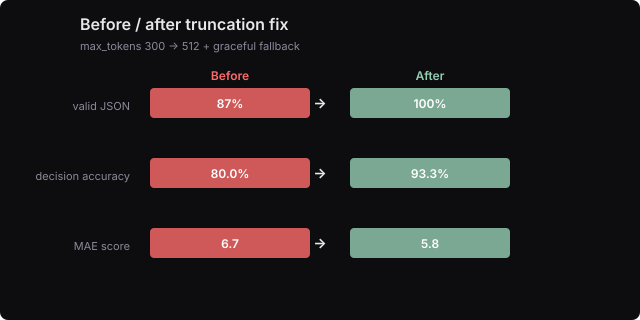
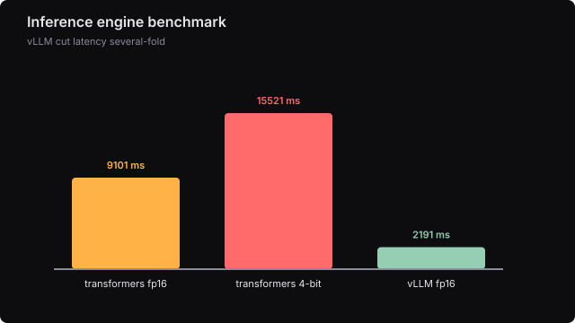
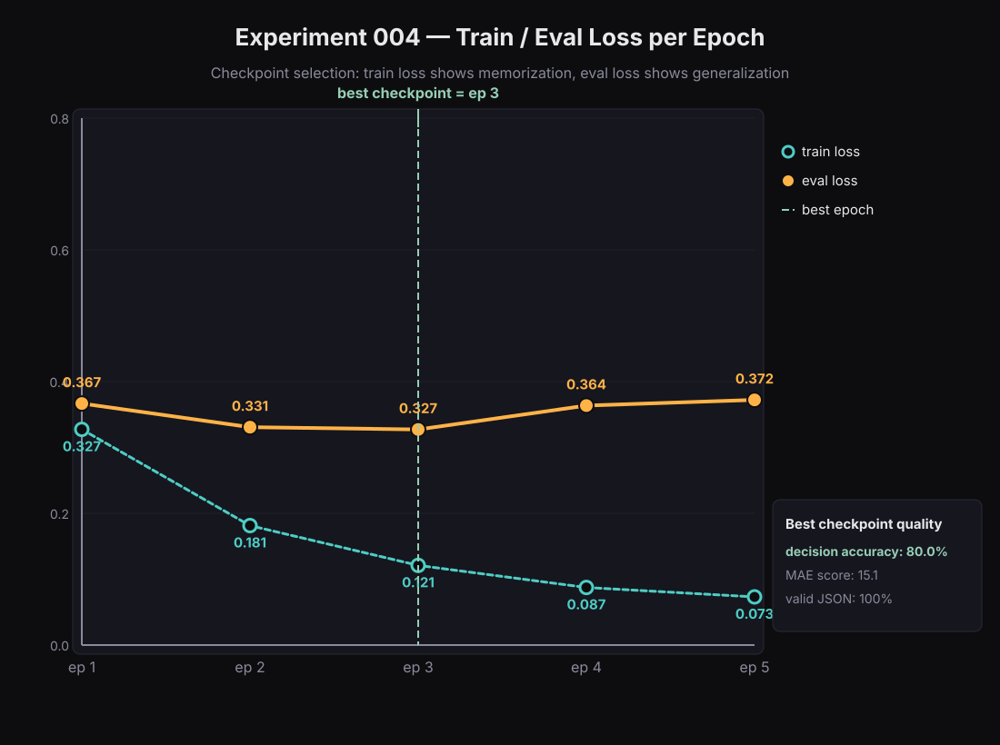
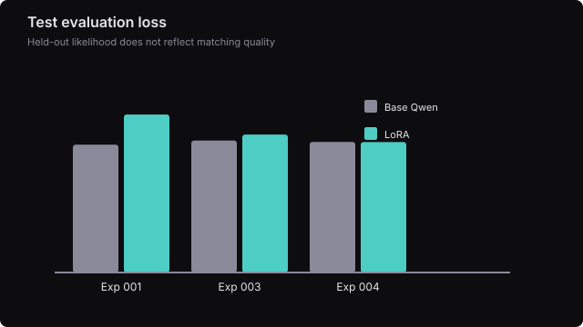
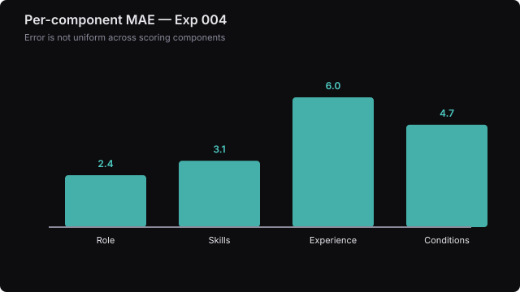
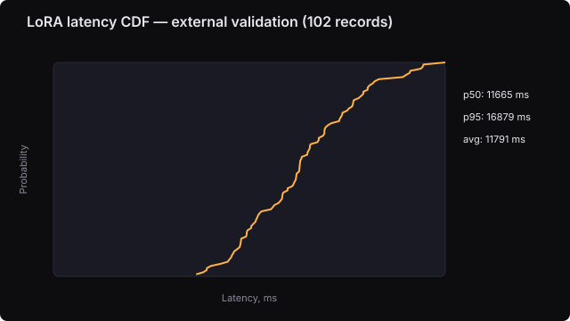
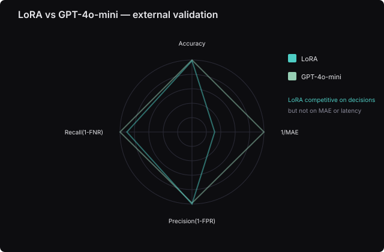
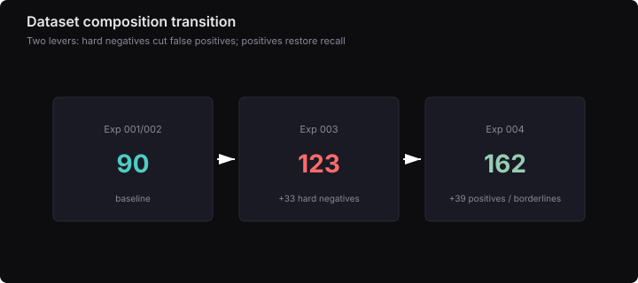

Документальный фильм внутри браузера
HR Assistant LoRA
Рождение способности. Как небольшая языковая модель учится принимать HR-решения — урок за уроком, датасет за датасетом.
Сцена 2 · Действующие лица
Кто есть кто в этом фильме
Модели, метрики и инструменты — с их ролями.
Если какое-то слово непонятно, вернитесь сюда.
Базовая языковая модель. Умеет многое из общих задач, но не умеет сопоставлять кандидатов с вакансиями.
Маленький модуль, который доучивает базовую модель конкретной задаче без перезаписи всей модели.
Примеры правильных ответов, по которым модель учится. Состав примеров важнее архитектуры.
Доля случаев, где модель правильно сказала match или no_match. Главная бизнес-метрика.
Mean Absolute Error. Насколько в среднем модель ошибается в числовом score кандидата.
Стандартная ML-метрика. В этой задаче она обманывает: низкий loss ≠ правильные решения.
Сложные примеры, где кандидат внешне похож на подходящего, но на самом деле не подходит.
Подходящие и пограничные кандидаты. Помогают модели не становиться слишком консервативной.
Тесты в настоящем API с реальными запросами. Показывают, выдержит ли модель боевые условия.
Inference-движок, который ускоряет ответы модели в 5–7 раз без потери качества.
Модель-референс от OpenAI. С ней сравниваем, насколько близка локальная модель к облачной.
Структурированный формат ответа модели: match/no_match, score, оценки по компонентам, reasoning.
Сцена 3 · Базовая модель
Всё, что умеет модель из коробки
Qwen2.5-1.5B-Instruct умеет говорить, строить JSON и вежливо отвечать. Но сопоставить кандидата с вакансией — другая задача.
«Форма ответа освоена, но смысл задачи — нет.»
Врач на вакансию специалиста по разметке данных.
reference: no_match model: matchLoRA на 90 teacher-примерах (r=8, 5 эпох) научится повторять разметку и улучшит решения по сравнению с базовой моделью.
Сцена 4 · Первый урок
Форма без смысла
LoRA на 90 примерах, 5 эпох. Loss падает, а decision accuracy остаётся на уровне базовой модели — модель выучила форму, а не смысл.
«Модель выучила форму ответа, а не его смысл.»

Сцена 5 · Парадокс метрик
Хороший loss — плохая новость
Validation loss говорит «всё отлично», а решения — «всё плохо». Значит, мы измеряли не то.
«Language-modeling perplexity измеряет не то же самое, что способность принимать HR-решения.»

Увеличение ёмкости адаптера (r=8→16, 7 модулей) на тех же 90 примерах позволит модели уловить matching-логику.
Сцена 6 · Второй урок
Первый рост
Тот же датасет, другая динамика обучения. Модель начинает понимать matching-логику — но production-ловушки ещё впереди.
«Модель стала лучше улавливать matching-логику, но реальный мир оказался сложнее тестового набора.»

Сцена 7 · Ловушка
Чего не видит offline-тест
Positive smoke проходит. Negative smoke падает: obvious negatives, hard negatives, edge cases, invalid input — модель пропускает ловушки.
«Модель не знает, как выглядит настоящая ловушка.»

Врач на вакансию специалиста по разметке данных.
score 27 → 72 no_match → matchМодель провалила negative smoke из-за недостатка сложных негативных примеров, а не из-за параметров LoRA. Добавим hard negatives, сохранив тот же адаптер.
Сцена 8a · Третий урок
Hard negatives
Датасет 90 → 123 записи. Модель учится говорить «нет» на сложных негативных примерах. Конфигурация LoRA не менялась.
«Раз модель не знает ловушек, покажем ей ловушки.»

Сцена 8b · Торговля
Цена отсева
Hard negatives убили false positives, но модель стала консервативной — и стала отсеивать истинные match.
«Улучшение в одном измерении качества ухудшило другое. Следующий шаг — проверить, восстановят ли positive и borderline примеры recall, сохранив умение отсеивать ловушки.»

Positive и borderline примеры вернут модели способность находить подходящих кандидатов, сохранив достижения по hard negatives.
Сцена 9 · Четвёртый урок
Баланс
Датасет 123 → 162. Hard negatives остались, добавили positives и borderlines. Конфигурация LoRA не изменилась.
«Правильный состав teacher dataset важнее архитектурных изменений.»

На независимой выборке LoRA приблизится к GPT-4o-mini по decision accuracy, но может отличаться по MAE, FNR и скорости.
Сцена 10 · Внешняя проверка
Модель в незнакомом лесу
102 записи, которых модель никогда не видела. Сравнение с GPT-4o-mini — честная оценка, не маркетинговая цифра.
«Модель обобщается и приближается к облачной по решениям, но не идентична ей.»

Сцена 11 · Smoke repeatability
Первые продакшн-шаги
Production smoke проходит стабильно: Exp 003, Exp 004, rerun после оптимизации.
«Production smoke — не однократная удача, а стабильный gate.»

Обрезание ответа и отсутствие fallback искажали оценку качества модели. Увеличим лимит токенов и добавим защиту от обрыва JSON.
Сцена 12 · Разрыв и фикс
Когда ответ не влезает
Production runtime нашёл слабое место: truncation + HTTP 422. Фикс: max_tokens 300 → 512 + graceful JSON fallback.
«Production bug может исказить оценку качества модели.»

Сцена 13a · Поиск узкого места
Где теряется время
После Exp 004 latency p50 = 11.7 с — слишком медленно. Профилирование показывает: почти всё время уходит на генерацию токенов.
«Bottleneck найден: почти всё время уходит на генерацию токенов.»

vLLM + warm persistent process даст production-скорость до 2 секунд без переобучения и без заметной потери точности.
Сцена 13b · Latency
Модель учится быстрее
vLLM сокращает latency в несколько раз. Warm persistent process доводит среднее время ответа до 1.6 с.
«Latency становится отдельной инженерной задачей после достижения качества.»

Сцена 14 · Сильнее ожиданий
Qwen-LoRA vs GPT-4o-mini
102 пары кандидат-вакансия, которых модель никогда не видела. Qwen-LoRA приблизилась к облачному эталону по решениям, но не идентична ему.
«Qwen-LoRA держится рядом с облачным эталоном — и остаётся независимой.»

Сцена 15 · Честный диагноз
Что доказано, а что нет
Честная классификация достижений важнее маркетингового оптимизма.
«Мы доказали, что маленькая локальная модель может стать production-viable. Мы не доказали, что она превосходит эталон во всём.»

Сцена 16 · Следующий цикл
Модель продолжает расти
ML-исследование циклично. Каждый цикл заканчивается не победой, а новым вопросом.
«История продолжается.»

Сцена 17 · Разбор эпох
Две кривые — одно решение
ML-инженер анализирует не одну метрику, а две. Train loss отражает запоминание модели, eval loss — способность к обобщению. Experiment 004 показывает, как инженер принимает решение, сравнивая обе кривые, а не выбирая checkpoint автоматически по номеру эпохи.
«Лучший checkpoint рождается не из минимального train loss, а из баланса между запоминанием и обобщением.»

Сцена 18 · Лучшая эпоха
Лучшая эпоха — не последняя
Во всех экспериментах лучший checkpoint оказался не на финальной эпохе. Train loss падал дальше, eval loss рос.
«Больше усилий не всегда означает больше мастерства.»

Сцена 19 · Данные важнее архитектуры
Главный рычаг качества
Все 4 adapter_config.json идентичны: r=16, α=32, dropout=0.05, 7 target modules. Менялись только данные.
«Одинаковая модель, разные данные — разные качества.»

Сцена 20 · Архив
Все артефакты на одном экране
Ключевые графики и диаграммы, которые документируют путь модели.
«Каждая метрика — это маленькое открытие.»





Сцена 21 · О методе
Как устроен эксперимент
Teacher dataset → LoRA → vLLM → Telegram. Одинаковая архитектура, разные данные. Каждое число связано с JSON-источником.

«История продолжается. Следующий цикл — калибровка, расширение датасета, квантизованный сервер.»